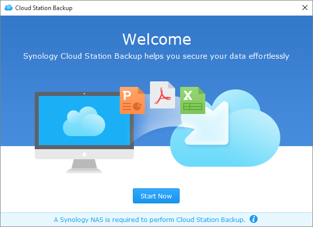

Genel Bakış
Cloud Station Server sadece sofistike bir platformlar arası senkronizasyon yazılımı değil, kullanıcılar onu kişisel bilgisayarlarını yedeklemenin daha akıllı bir yöntemi olarak da kullanabilirler. Gerçek zamanlı bir yedekleme çözümü olan Cloud Station Backup, anlık ve bant genişliği tasarruflu olup, tek bir dosyanın 32 geçmiş sürümüne kadar daha iyi koruma sağlar.
Cloud Station Server'ın Synology NAS üzerinde kurulması
- Paket Merkezi'ne gidin, Cloud Station Server'i bulun ve ardından Kur'a tıklayın.
- Cloud Station Server'ı başlatın.
- Genel Bakış'a gidin ve Şimdi İndir'e Cloud Station Backup altında tıklayın. (Cloud Station Backup'ı Synology İndirme Merkezi'nden de indirebilirsiniz.)
- Yükleyiciyi bilgisayarınızda başlatarak Cloud Station Backup yükleme talimatlarını takip edin.
- Yüklemeden sonra Cloud Station Backup'ı bilgisayarınızda çalıştırın. Şimdi Başlat'a tıklayın. 
- Cloud Station Server çalıştıran Synology NAS'ın adresini (veya QuickConnect ID'sini), kullanıcı adını ve parolayı girin. (Ayrıca sağ taraftaki arama simgesine de tıklayabilirsiniz; Cloud Station Backup otomatik olarak LAN dahilindeki diğer Synology NAS sunucuları arayacaktır). İleri'ye tıklayın.
- Yedekleme kaynağınızı seçin ve senkronize etmek istemediğiniz alt klasörlerin işaretini kaldırın.
- Seç'e tıklayarak Synology NAS'ınızda bir klasör seçin. Cloud Station Backup seçtiğiniz hedefte bilgisayar adınızla bir yedekleme klasörü oluşturacaktır. home klasörü varsayılan olarak hedef klasörünüz olarak seçilecektir. Liste üzerinde bulunmayan bir klasörü kullanmak isterseniz, lütfen sistem yöneticinize başvurun. Sistem yöneticileri Cloud Station Server paylaşımını yönet özelliğine Cloud Station Server yardım bölümünde başvurabilirler.
- Senkronizasyon filtreleri veya kuralları oluşturmak isterseniz, Yedekleme kuralları'na tıklayın.
- Yedekleme ayarlarınızı gözden geçirmek için İleri'ye tıklayın ve ardından Bitti'ye tıklayın.
- Ana uygulamada yedekleme sürecinizi görüntüleyebilirsiniz.


Senkronizasyonlu bir dosyanın önceki bir sürümünü Cloud Station Server'dan indirme veya geri yükleme
- Cloud Station Server > Sürüm Geçmişi'ne gidin ve geri yüklemek istediğiniz dosya veya klasörü bulun.
- Almak istediğiniz dosyayı seçin ve Eylem'e tıklayın. Önceki sürümlere gözat'a tıklayın. Eğer bir dosya bilgisayarınızdan yanlışlıkla silinmişse veya kaldırılmışsa, geri yüklemek için Geri Yükle'ye tıklayabilirsiniz.
- İndirmek istediğiniz dosyanın sürümünü seçerek İndir'e tıklayın. Ya da seçili sürümün geri yüklenmesini istediğinizden eminseniz Geri Yükle'ye tıklayın, geçerli sürümünüzün üzerine yazılır.


5. Verilerinizin daha fazla korunması
Verilerinizi korumaya ve yedeklemeye dair daha fazla yöntem için DSM'de sunulan diğer yedekleme hizmetleri hakkında ayrıntılı eğitimleri görmek amacıyla buraya tıklayın.